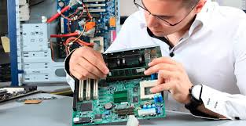

Tech Home
Sua Assistência Técnica em casa
Computadores
Serviços
Suporte Técnico
- Suporte em sistemas operacionais Windows, Linux e OSX.
- Instalação e suporte à programas e utilitários.
- Instalação de Hardware e periféricos em geral.
- Upgrade de Hardware, tais como: memória, espaço de armazenamento (HD), placa mãe, processador e demais.
- Substituição de sistemas, ou seja, troque seu Linux por um sistema Windows.
- Manutenção preventiva e corretiva, com garantia.
- Análise e remoção de vírus, spywares e malwares.
- Formatação, instalação e configuração de seu computador e notebook.
- Instalação de programas.
- Configuração de internet.
- Instalação de periféricos.
- Atendimento e suporte remoto, telefônico e presencial.
- Backup de dados e arquivos pessoais.
Servidores
- Instalação e configuração de servidores Windows e Linux: servidores de arquivo, proxy e firewall.
- Configuração do ambiente de rede.
- Suporte remoto e presencial.
- Contratos de suporte.
Redes
- Montagem e configuração de ambiente de redes Linux e Windows.
- Configuração de roteadores, repetidores e modens ADSL.
- Instalação de placas de rede e wireless.
- Assessoria com Velox, Virtua, GVT e demais operadoras.
- Projetos de implementação de redes, tais como: Montagem de rack e aquisição de equipamentos.
- Compartilhamento e acesso a internet.
Suporte Remoto
- Valores diferenciados de acordo com o problema.
- Resolução rápida e prática de problemas.
- Instalação de programas e dispositivos.
- Contratos de suporte remoto.